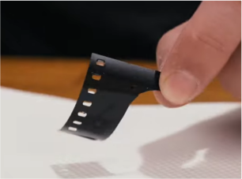

Snip test: Test your film chemicals
Nov 3rd, 2023
Bellevue, WA
It's been a few months since I ruined a few rolls of some color film that I shot on a trip to Asia, and I haven't developed any new rolls of color film since then. A part of me me was worried that my C41 development chemicals were exhausted and trying to use them any further would yield similar results. About a month ago I've purchased some new dry packed chemicals from Cinestill to replace my older developer and blix. But before I do that, I wanted to test the chemicals to see if they were really expired.
Preparing for a snip test. Image from Cinestill Snip test video
Prepare for the snip test
The test is called a "Snip Test" because it only requires a small snip of film to test the chemicals. You can just cut off a bit of the film leader (the small lenght of film at the start of a roll) or as I did, use an expired roll of film. It doesn't require the film to be in perfect condition, and you'll be exposing the film to room light anyways.
- Cut a snip of film
- Put the snip of film in chemical(s) (depending on C41 or Black and white)
- Stir for a few seconds every minute, total time of 5 minutes
- Pour back the chemicals after 5 minutes
- Wash out the film snip with water
- Check your results
Snip test
I start with 2 snips of film from an expired roll
For C41 2 step process, I've prepared to test the developer and blix seperately
Using my phone time for 5 minutes.
Aggitate and shake the film snip inside the solution.
After 5 minutes, wash and here are the results.
Keep or replace?
Once you have your results, check to see what has happened with the film snip to see if you need to replace the chemicals.
For black and white film 1 step process such as Df96, there is only 1 chemical used. The results would show an totally opaque (not see through) snip of film if everything was working as expected. And the film itself would be transparent (see throuugh) if the chemicals were exhausted.
For bcolor film with 2 step process, such as Cinestill Cs41, there are 2 chemicals used. The developer should start out opaque and end up opaque. The blix should start out opaque and end up transparent. If those aren't the results, then the chemicals are exhausted.
For color 2 step chemicals: Cs41 snip test results chart
| Developer chemical | Blix chemical | |
|---|---|---|
| Starting conditions | Opaque |
Opaque |
| Success conditions | Opaque |
Transparent/clear |
| Exhausted conditions | Transparent/cloudy |
Opaque/cloudy |
For Black and white 1 step process: Df96 snip test results chart
| One-step chemical | |
|---|---|
| Starting conditions | Opaque |
| Success conditions | Opaque  |
| Exhausted conditions | Transparent |
Final thoughts
So based on my snip test, it seems that chemical exhuastion was not the cause of my ruined film, I think it might be somewhere in my process that I had accidentally not cleaned properly the equipment and some of the chemicals were able to mix (even in small amounts!!) causing blank film. I'll have to look into this and continue to investigate. It's important to note that even the smallest amount of blix getting into developer can completely ruin the development process.
Note: When is it a good time to do a snip test? From the videos I watched, it seems like always to do a snip test every so often especially if you haven't use the chemicals in a while. Keep a record of the time that the snip test was performed and compare to see how long the chemicals last between testing.
References
- Reimann Pembroke Youtube channel with a step-by-step instruction video How to Test Your C-41 Film Chemicals with a Snip Test
- Cinestill Youtube channel also with a step-by-step instruction video Cinestill Snip test video